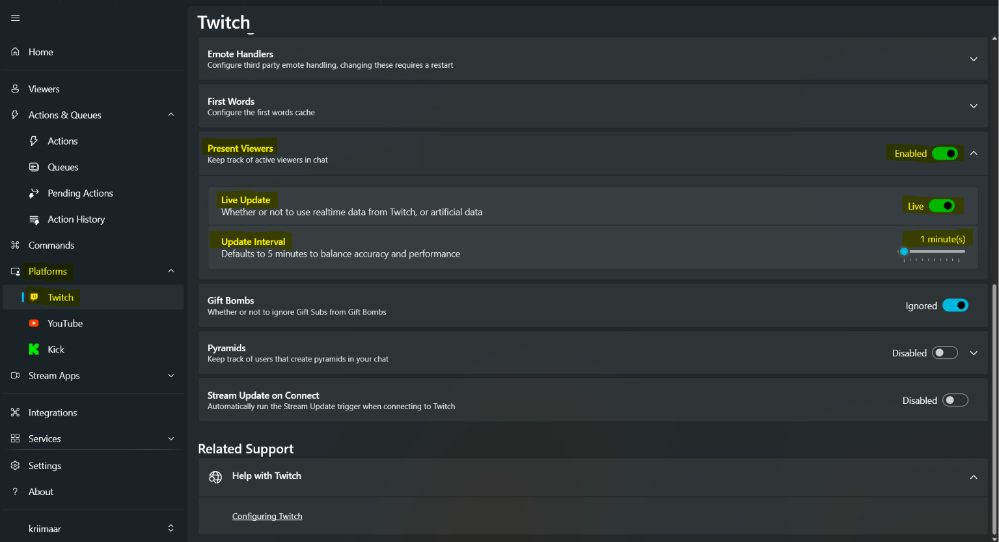
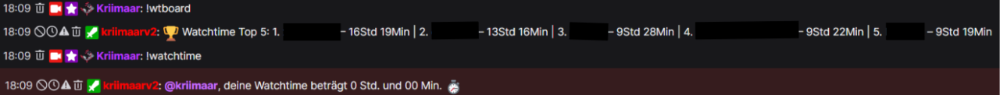

WATCHTIME COMMAND
Beantwortet den !watchtime-Command im Chat mit der gesammelten Watchtime des Zuschauers.
Streamer.bot · Twitch · Watchtime
Mit dieser Funktion sammelt Streamer.bot die Watchtime deiner Zuschauer selbst, ganz ohne externe Dienste. Wer aktiv im Chat dabei ist, wird über die Present-Viewer-Liste erkannt und bekommt jede Minute gutgeschrieben. Dazu gibt es einen !watchtime-Command, ein Top-5-Leaderboard für den Chat und optional einen Import, der deine bisherige StreamElements-Watchtime übernimmt.
Video-Anleitung
Das Video zur Einrichtung folgt hier. Bis dahin führt dich die Anleitung in den Abschnitten darunter Schritt für Schritt durch die Einrichtung.
02 / Voraussetzungen
Streamer.bot legt für jeden Zuschauer eine eigene User-Variable an und zählt dort hoch. Die Twitch-Verbindung steht zum Glück schon, wie du sie von anderen Funktionen kennst.
Das Bot-Konto muss mit deinem Chat verbunden sein, sonst kann es weder auf Commands antworten noch die Zuschauerliste empfangen.
Die Zählung läuft komplett über die Present-Viewer-Funktion von Streamer.bot. In Schritt 03 zeige ich dir, wo du sie einschaltest.
Der Import-Key weiter unten bringt Command, Counter und Leaderboard mit. Optional gibt es einen zweiten Key, der deine StreamElements-Watchtime importiert, inklusive Undo.
03 / Twitch-Einstellungen
Damit überhaupt etwas gezählt wird, muss Streamer.bot wissen, wer gerade in deinem Chat aktiv ist. Das erledigt die Present-Viewer-Funktion, du musst sie nur einmal in den Twitch-Einstellungen einschalten.

04 / Import
Beide Pakete landen über Import → Import from Clipboard in Streamer.bot. Der erste Key enthält die komplette Watchtime-Funktion, der zweite ist der optionale StreamElements-Import mit Undo.
Watchtime-Command, -Counter und -Leaderboard, fertig verdrahtet und importierbar.
Holt deine bisherige Watchtime aus StreamElements rüber. Läuft beim Import etwas schief, rollt die Undo-Funktion alles zurück.
05 / C#-Codes anpassen
Alle drei Codes kannst du hier anpassen. Deine Werte kommen in die Felder rechts, der Code links zieht sofort nach. Die Zeilen mit ★ markieren genau die Stellen, an denen deine Eingaben landen. Gespeichert wird alles nur lokal in deinem Browser.
Beantwortet den !watchtime-Command im Chat mit der gesammelten Watchtime des Zuschauers.
Läuft bei jedem Present-Viewer-Update und zählt alle aktiven Zuschauer hoch. Du selbst als Broadcaster (Rolle 4) wird übersprungen, gezählt wird nur, wenn der Stream live ist.
Zeigt die fleißigsten Zuschauer nach Watchtime an. Wer selbst nicht in den Top 5 steht, bekommt seinen Platz automatisch hinten drangehängt.
06 / In Streamer.bot einrichten
%watchtimeSeconds% um dein Intervall.07 / Abschluss
!watchtime und !wtboard in den Chat schreiben. Der Bot sollte bei beiden antworten, ganz am Anfang natürlich noch mit 0 Std. und 0 Min.
08 / Auto Activate/Deactivate (optional)
Wem die manuelle Aktivierung zu faul ist: Auto Activate/Deactivate Watchtime-Counting aktiviert bei Streamstart automatisch die Watchtime Counter-Action und legt sie bei Streamende wieder still. Das spart Anfragen des Bots an die Twitch-Server, wenn der Stream nicht läuft, und entlastet damit auch minimal den PC.
Der Import enthält nur die Schalt-Logik plus Counter-Duplikat, Command, Leaderboard und StreamElements-Import bleiben unberührt.
Feedback & Support
Melde dich im Discord oder lege ein GitHub Issue an. Beides hilft, die Sammlung laufend zu verbessern.